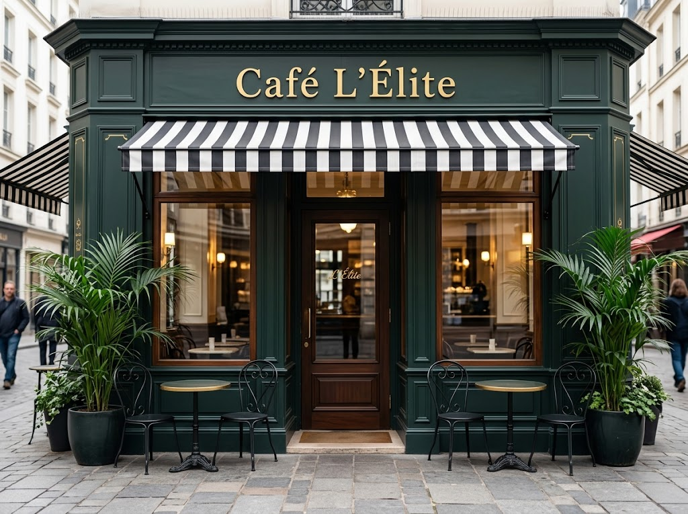
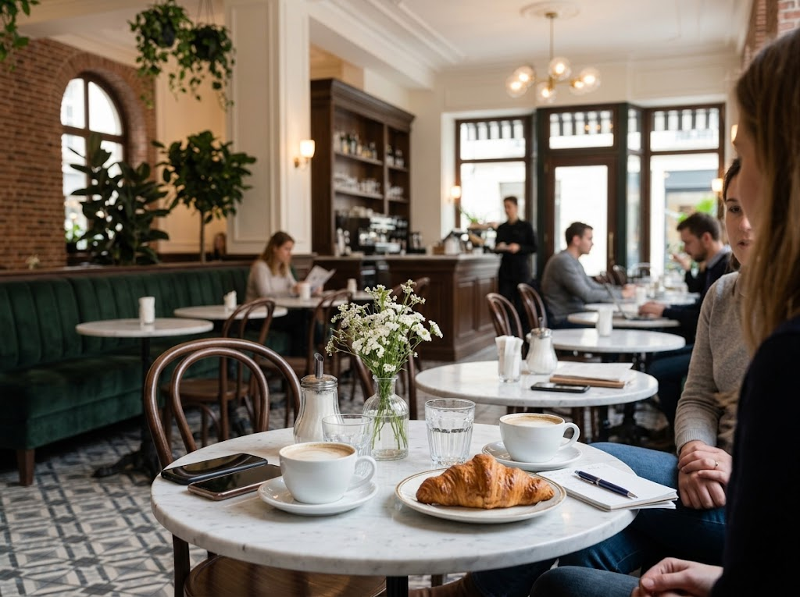
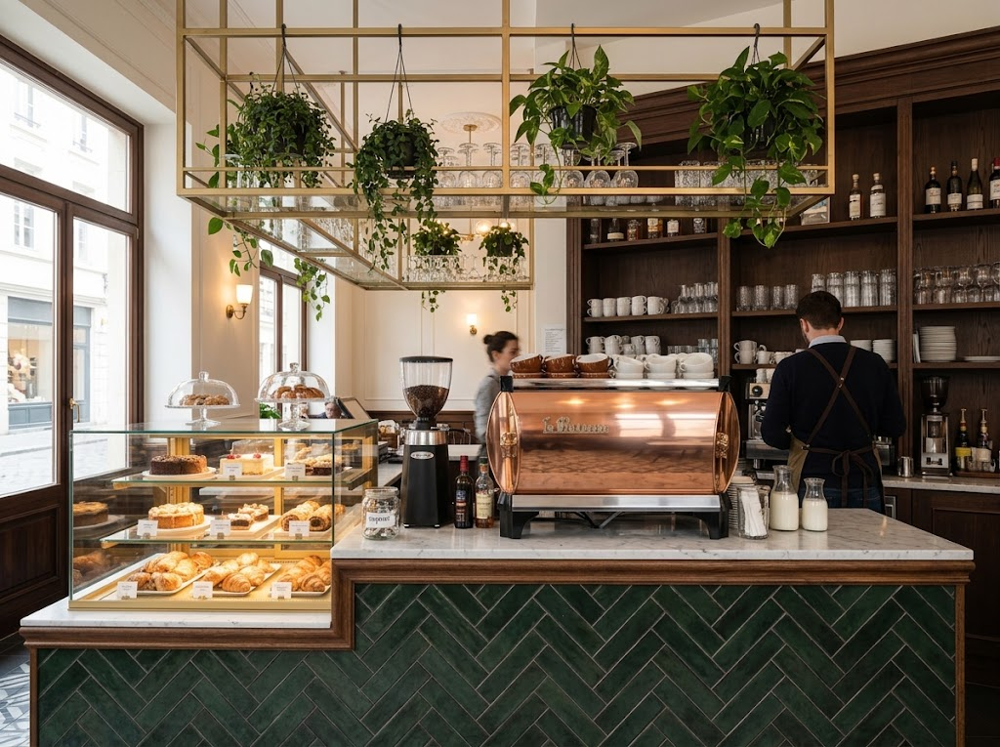
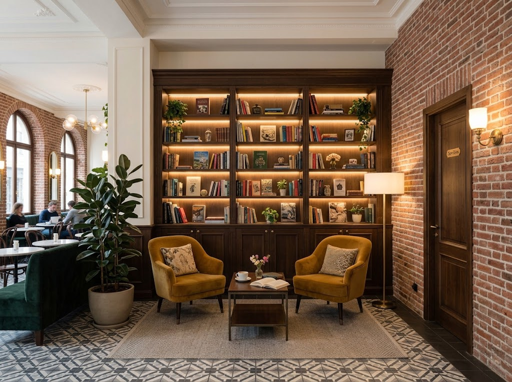

Un vistazo a nuestro espacio
Galería
Cada rincón tiene una historia. Estas son algunas postales de nuestro café.





Un vistazo a nuestro espacio
Cada rincón tiene una historia. Estas son algunas postales de nuestro café.



